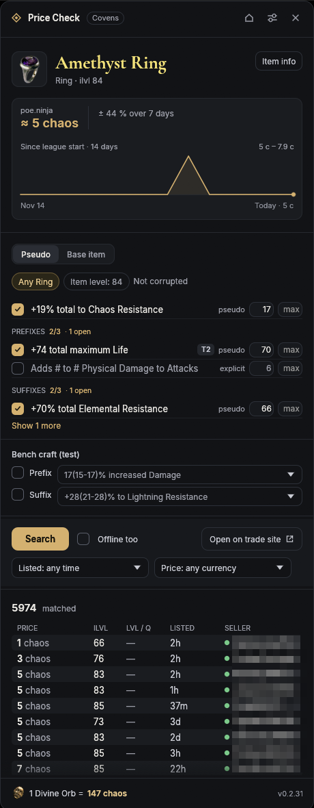
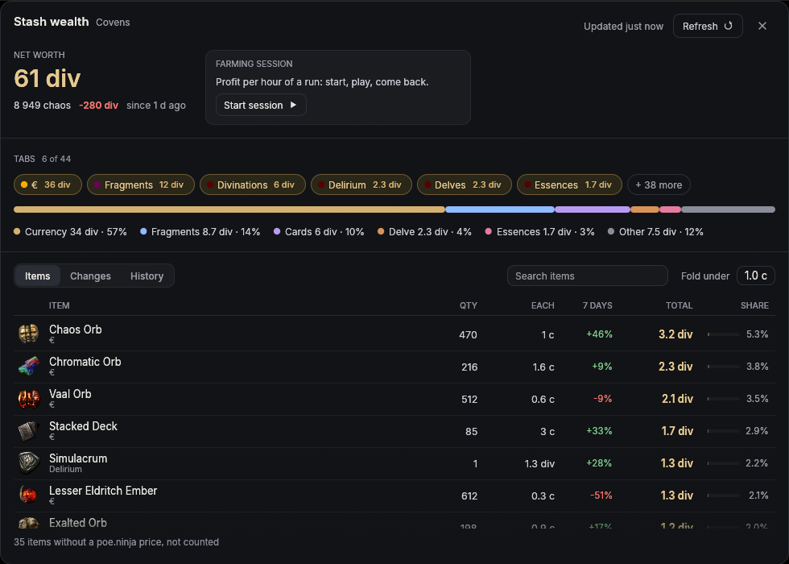

PoE Price Check
Hover an item in Path of Exile, press a key, see what it sells for.
One executable, nothing to install. Unofficial tool, not affiliated with Grinding Gear Games.


What it does
Price check
Ctrl+D on an item searches the official trade site with filters built from the item: properties, pseudo totals, modifier tiers, grouped into prefixes and suffixes. Currency, fragments and cards go through the bulk exchange.
poe.ninja prices
An estimate in chaos or divine orbs next to the listings, its trend over 7 days, the price day by day since the start of the league, and related items a click away.
Travel to hideout
A click on an instant buyout listing takes you to the seller's hideout, as the trade site's button does.
Bench craft test
On a rare with a free prefix or suffix, add a crafting bench modifier and see the price with it.
Stash wealth
Ctrl+Alt+D: the value of your stash tabs by item and category, what came in and went out, your net worth over time, and a farming session with its profit per hour.
Item check and maps
Ctrl+Alt+F shows an item's details, links to the wiki, PoEDB and Craft of Exile, and a verdict on every map modifier, with stash search regexes.
Quick search
Alt+F opens a search box over the game: type an item's name, get its poe.ninja price, price check it without having it.
Overlay
Shift+Space: cheat sheets pinned over the game, the Betrayal board with every Syndicate reward rated, a stopwatch, the Delve grid, chat commands on hotkeys, Ctrl + wheel to switch stash tabs.
League content
Items and modifiers of the current league are read from the trade site at launch. Heist, timeless jewels, mercenary warrants, Valdo maps, viscera are handled.
Guild unique stash
Tells whether a unique is already in your guild's unique tab, from the guild stash history.
Getting started
- Download
poe-pricecheck.exeand run it. It waits in the system tray. - In Settings, choose the league and paste your
POESESSID: it enables instant buyout listings, travel to hideout, the stash wealth, the guild stash and higher request limits. - In game, hover an item and press
Ctrl+D. Every hotkey can be changed in Settings.
Updates are offered in the app when a new release is published here.
Privacy
No account of ours, no telemetry. The program only talks to these services:
| Service | What for | What is sent |
|---|---|---|
| pathofexile.com | Trade searches, leagues, travel to hideout, your stash tabs, guild stash history | Your search; your POESESSID as a cookie, if you set one |
| poe.ninja | Price estimates | The league name and the item looked up |
| web.poecdn.com | Item pictures | Nothing but the picture address, no cookie |
| github.com | Update check | Nothing but the request for the latest release |
The POESESSID and the settings are kept in the Windows Credential Manager and are only ever sent to pathofexile.com. The program reads items through the clipboard (it sends Ctrl+C to the game, as a player would): it does not read the game's memory nor inject anything into it.